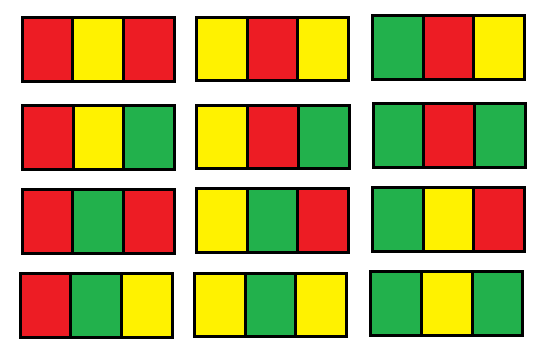

1411. 给 N x 3 网格图涂色的方案数
一行只有 aba（两头同色）和 abc（三色各异）两种形态，逐行 DP：aba→(3,2)、abc→(2,2)，两类相加。
思路
- 一行 3 格相邻不同色 ⇒ 只有 6 种
aba（3×2）和 6 种abc（3×2×1），共 12 种行形态。 - 转移按形态计数（可暴力验证）：上一行
aba→ 下一行 3 种aba、2 种abc；上一行abc→ 各 2 种。 - 计数会爆
int：long+ 每步取模1e9+7；答案 = 两类相加再取模。
图解
最优解
1class Solution {2 public int numOfWays(int n) {3 // 一行 3 格只有两种形态：aba（两头同色，如 ABA）和 abc（三色各异，如 ABC）4 long aba = 6, abc = 6; // n=1：aba 型 3×2=6，abc 型 3×2×1=65 for (int i = 2; i <= n; i++) {6 // 上一行是 aba：下一行 aba 型 3 种、abc 型 2 种；上一行是 abc：各 2 种7 long na = (3 * aba + 2 * abc) % 1000000007;8 long nc = (2 * aba + 2 * abc) % 1000000007;9 aba = na;10 abc = nc;11 }12 return (int) ((aba + abc) % 1000000007);13 }14}题目
你有一个 n x 3 的网格图 grid ，你需要用 红，黄，绿 三种颜色之一给每一个格子上色，且确保相邻格子颜色不同（也就是有相同水平边或者垂直边的格子颜色不同）。
给你网格图的行数 n 。
请你返回给 grid 涂色的方案数。由于答案可能会非常大，请你返回答案对 10^9 + 7 取余的结果。
示例 1：
输入：n = 1 输出：12 解释：总共有 12 种可行的方法：
示例 2：
输入：n = 2 输出：54
示例 3：
输入：n = 3 输出：246
示例 4：
输入：n = 7 输出：106494
示例 5：
输入：n = 5000 输出：30228214
提示：
n == grid.lengthgrid[i].length == 31 <= n <= 5000
题面取自力扣当前版本。
数据快照 2026-11-04。题面版权归力扣所有，本站点仅供本人学习使用，请勿对外发布。